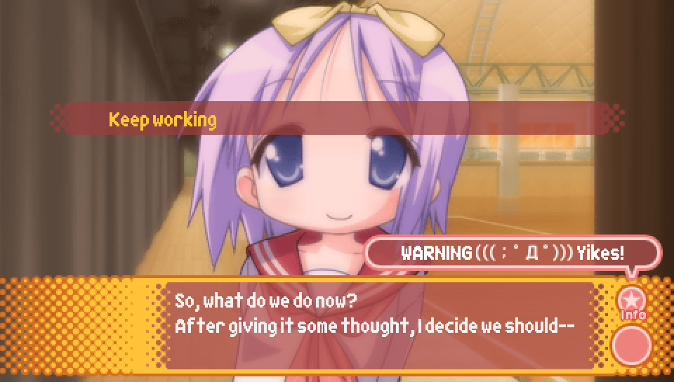

|

As this patch only contains the intro to Episode 2, there's not much
to say in terms of a guide. Just enjoy!
When you see this choice, you'll see it only has one option.
This isn't because there's some second choice you have to unlock,
it's merely that I have removed the second choice as it takes you
further into Episode 2, which is beyond the scope of this version of
the patch. Once the patch is updated to include Episode 2 proper, this choice
will be updated to have the second choice added back in.
Thanks for playing!
|